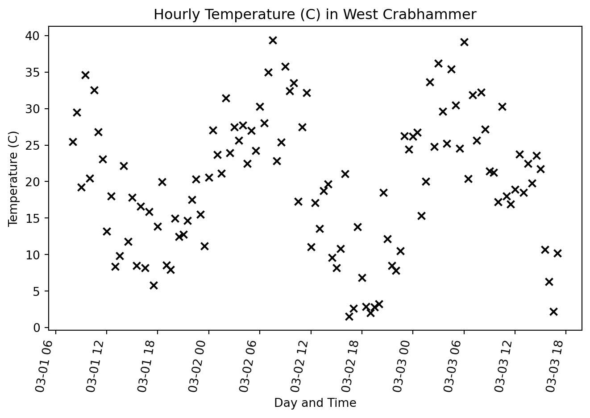

It allows for more flexibility than a GUI based GIS program.
Other GIS applications (e.g. QGIS, ArcGIS, postGIS) often have a Python interface.
generally a widely used language.
Environment
Before we get started we need to set up a Python environment in which to work. We will be using Anaconda for this. It should already be installed on the lab computers. If you are using your own computer
Download the environment.yml
If you are working on a lab computer In the start menu search for Anaconda. Open an Anaconda Powershell. (on linux or mac with Anconda or miniconda or Mamba installed just open a terminal)(If you are installing on your own computer I recommend Mamba)
A note on Windows terminals
cd ~
mkdir geog441
cd geog441
cp ~/Downloads/environment.yml .
conda env create -f environment.yml
Using conda env create with the environment yaml creates a new conda environment named geo with the dependencies installed. Next we will activate the geo environment.
conda activate geo
Notice that the conda environment shown after the prompt has changed from (base) to (geo).
If later you find that you need another package you can add it to the environment (while in the environment) with conda install <whatever_package>.
This will open a new jupyter lab in your browser. ## Using VScode
Running Jupyter in VScode offers some advantages (in my opinion). To do this you need to install the jupyter extension and the Python Extension. Then when you open a file with a .ipynb extension it will be treated as a Jupyter notebook.
Basic Python data types
Type
Example(s)
String
'Dude!'
Float
1.2
Int
3
Tuple
('x', 'y') (1, 2) ('x', 3.2)
List
['x', 'y'] [1, 2] Possible but bad –> ['x', 3.2]
Dict
{'dogs': 26, 'cats', 100}
etc…
there are others
Basic Numbers
Floats and Ints don’t do anything all that surprising
a =2+2b =2.0+2.0c = a + bprint(f'a is an {type(a)}')print(f'b is a {type(b)}')print(f'c is a {type(c)}')print(f'a / b is {a / b}')print(f'5 / 4 is {5/4}')print(f'but 5 // 4 is {5//4}')print(f'and 5 % 4 is {5%4}')
a is an <class 'int'>
b is a <class 'float'>
c is a <class 'float'>
a / b is 1.0
5 / 4 is 1.25
but 5 // 4 is 1
and 5 % 4 is 1
Sequences
Lists, tuples, and strings ae all sequences
# a lista_list = [1, 2, 3, 4, 5, 6, 7, 8, 9]# a tuplea_tup = (1, 2, 3, 4, 5, 6, 7, 8, 9)# a stringa_str ='Wil je graag een neushorn?'# access by indexa = a_list[0]b = a_list[-1]c = a_list[4]print(f'by index:\n 0 --> {a},\n-1 --> {b},\n 4 --> {c}')# works fro strings toprint('string item at 4 --> ', a_str[4])# you can slice a list or tuple(remember 0 indexed)print('\nslices:')print(a_list[2:5])print(a_list[8:])print(a_tup[2:5])print(a_str[-9:])
a = [1, 2, 3, 4, 5, 6, 7, 8, 9]# use a loop to append squared values to new listsb = []for n in a: b.append(n**2)# or, better, use a comprehensionc = [n**2for n in a]print(b)print('is the same as')print(c)
[1, 4, 9, 16, 25, 36, 49, 64, 81]
is the same as
[1, 4, 9, 16, 25, 36, 49, 64, 81]
Functions
Defined with def
Can take arguments
can return something
have there own scope
import numpy as npdef root_mean_square(list_of_numbers): rms = np.sqrt( np.array([n**2for n in list_of_numbers]).sum() /len(list_of_numbers) )return rmsl = [1.2, 3.3, 1.4, 1.4, 4.2]rms = root_mean_square(l)print(rms)
2.6034592372457075
They do nat have to have arguments or return stuff.
def complain():print('This is boring!\nwhen will we get to the GIS stuff.\n\U0001F620\U0001F620\U0001F620\n\nSoon! Bear with me.')complain()
This is boring!
when will we get to the GIS stuff.
😠😠😠
Soon! Bear with me.
Pandas DataFrame
DataFrames hold tabular data
from datetime import datetime, timedeltafrom random import uniformimport matplotlib.pyplot as pltimport numpy as npimport pandas as pd# some arbitrary time range start_time = datetime(2025, 3, 1, 8, 0, 0)end_time = datetime(2025, 3, 3, 17, 0, 0)interval = timedelta(minutes=30)time_stamps = []current_time = start_timewhile current_time <= end_time: time_stamps.append(current_time) current_time += interval# some made up temperature datatemp_c = [20+ uniform(-10, 10) +10* np.sin(2* np.pi * t.hour /24)for tin time_stamps]# empty dataframedf = pd.DataFrame()# add datadf['date_time'] = time_stampsdf['T (C)'] = temp_cdf.head()
date_time
T (C)
0
2025-03-01 08:00:00
21.022221
1
2025-03-01 08:30:00
22.192412
2
2025-03-01 09:00:00
21.864310
3
2025-03-01 09:30:00
33.023162
4
2025-03-01 10:00:00
30.680347
Pandas DataFrame Cont.
fig, ax = plt.subplots()# create the scatter plotplt.scatter(df.date_time, df['T (C)'], marker='x', color ='k')# set the x-axis tick labels and rotate themplt.xticks(rotation=80, ha='right')# label axesplt.xlabel('Day and Time')plt.ylabel('Temperature (C)')plt.title('Hourly Temperature (C) in West Crabhammer')# adjust layout to prevent labels from overlappingplt.tight_layout()# Show the plotplt.show()

# get the mean temperature over the timeseriesdf['T (C)'].mean()
np.float64(20.1086139567247)
When there are no spaces in a column name you can access the column as an attribute of the datafame.
# get the number of time stamps in the date_time columndf.date_time.count()
np.int64(115)
There is a lot more to know about Pandas DataFrames. This is enough for us to move on to GeoPandas. I encourage you to learn more about Pandas as an exercise.
Homework
If you are choosing Python as you language in this course (and what we have covered today is not a peace of cake for you already), create a jupyter notebook and do the following:
Download the results from the class survey from here as a csv file.
Read the csv into a Pandas DataFrame (Hint: use the read_csv() method).
The headers are a mess! Change the column names to be reasonable.
Hint: columns is a mutable attribute of the dataframe so df.columns = some_list_of_the_correct_length will assign new column names.
If you are only going the R route, do the above, but in R. (Hints Below.)
data <- read.csv(“my_data.csv”)
Exploring Vector Data with Geopandas
Geopandas
<–img width=“560” height=“315” src=“images/pandas.png”><–/img> g e o p a n d a s
Vector Data
Most often we will interact with vector data using GeoPandas
Here we will read a geojson using the read_file method.
from pathlib import Pathimport geopandas as gpd# path to datadata_dir = Path('data')geojson = data_dir /'upper_santa_rita_creek.geojson'# open the geojsongdf = gpd.read_file(geojson)gdf